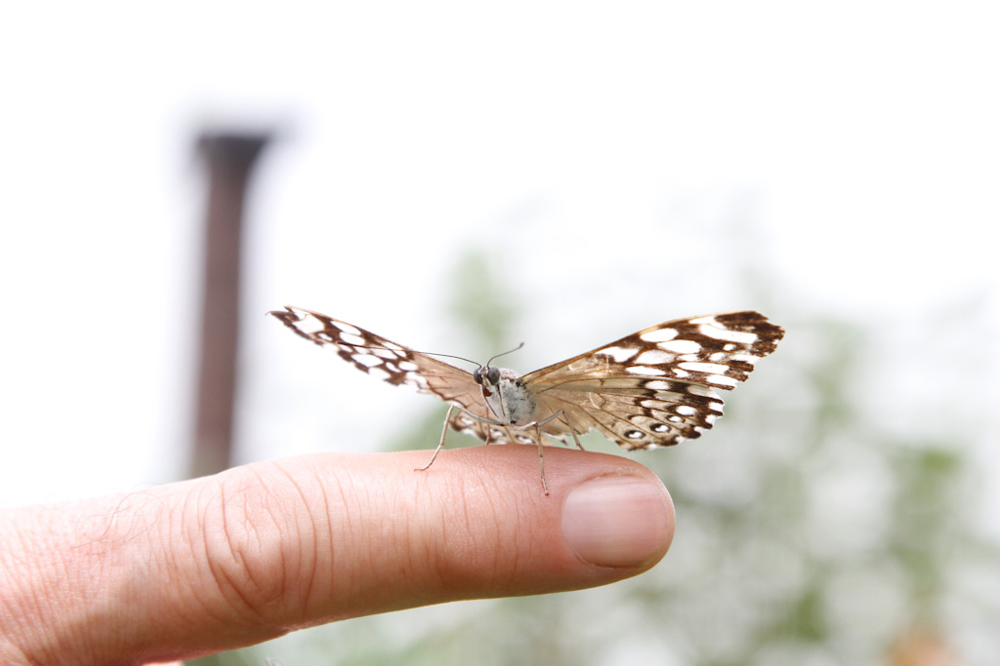

Mesmo sendo o maior centro econômico do Brasil, e uma metrópole predominantemente urbana, São Paulo preserva suas áreas de contato com a natureza, onde é possível praticar esportes, passar um tempo ao ar livre e conhecer diversas espécies de animais. Alguns desses lugares são o Zoológico de São Paulo, o Aquário, o Instituto Butantan e os 111 parques espalhados pela cidade.